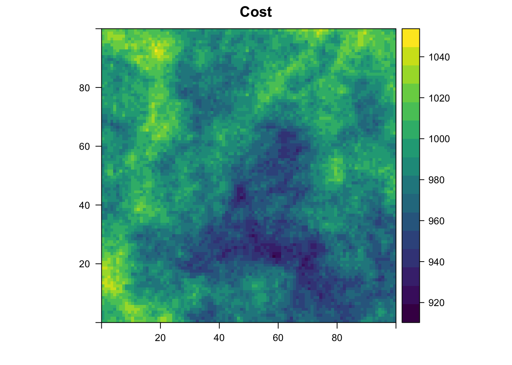
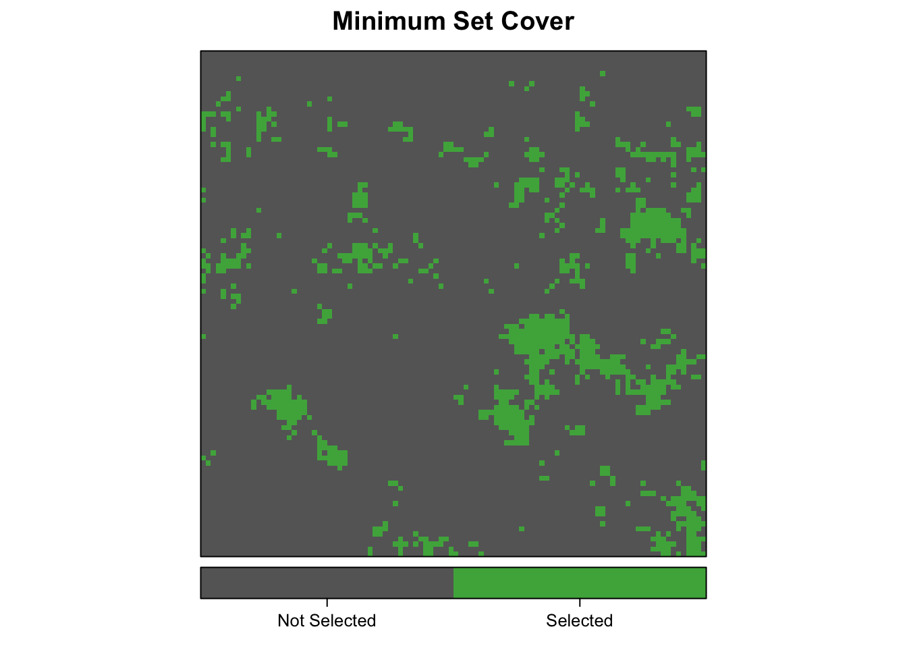

Systematic conservation prioritization takes a rigorous, repeatable, and systematic approach to designing new protected areas that efficiently meet conservation objectives, while minimizing socioeconomic cost. prioritizr is an R package for identifying the optimal location of new protected areas using the techniques of integer linear programming (ILP). In contrast to heuristic methods, such as simulated annealing (e.g. as implemented by Marxan), the ILP methods used by prioritizr find exact solutions to optimization problems and can produce higher quality solutions more efficiently.
In this tutorial, I will begin by introducing reserve design and integer linear programming in general, discuss the different types of reserve design problems and how to implement them in prioritizr, and finally demonstrate how to solve these problems.
A reserve design exercise starts by dividing the study region into planning units (typically square or hexagonal cells) and, for each planning unit, assigning values that quantify socioeconomic cost and conservation benefit for a set of conservation features. The cost can be the acquisition cost of the land, the cost of management, the opportunity cost of foregone commercial activities (e.g. from logging or agriculture), or simply the area. The conservation features are typically species (e.g. Clouded Leopard) or habitats (e.g. mangroves or cloud forest). The benefit that each feature derives from a planning unit can take a variety of forms, but is typically either occupancy (i.e. presence or absence) or area of occurrence within each planning unit. Finally, in some types of reserve design models, for each conservation feature, representation targets must be set, such as 20% of the current extent of cloud forest or 10,000km2 of Clouded Leopard habitat.
The goal of the reserve design exercise is then to optimize the trade-off between conservation benefit and socioeconomic cost, i.e. to get the most benefit for your limited conservation funds. Different reserve design models achieve this in different ways. In the minimum set cover model used by Marxan, the goal is to find the set of planning units that meets the representation targets while minimizing cost. Alternatively, in the maximum coverage model, the goal is to maximum the overall representation of conservation features while keeping cost within a fixed budget. Other approaches are possible that build on these basic models.
Formulating the conservation objective mathematically as an optimization problem allows us to tap into the rich body of knowledge that exists in the field of mathematical optimization. In general, the goal of an optimization problem is to minimize an objective function over a set of decision variables, subject to a series of constraints. The decision variables are what we control, usually there is one binary variable for each planning unit specifying whether or not to protect that unit. The constraints can be thought of as rules that need to be followed, for example, that the reserve must stay within a certain budget or meet the representation targets.
In the particular case of a minimum set cover problem, the reserve design problem is formulated, for \(n\) planning units and \(m\) conservation features, as:
\[ \text{Minimize} \sum_{i=1}^{n}x_i c_i + \text{ subject to } \sum_{j=1}^{n}x_j r_{ij} \geq T_i \space \forall \space i \]
where \(x_i\) is a binary decision variable specifying whether planning unit \(i\) has been selected (1) or not (0), \(c_i\) is the cost of planning unit \(i\), \(r_{ij}\) is the representation level of feature \(i\) in planning unit \(j\), and \(T_i\) is the target for feature \(i\). The first term is the objective function and the second is the set of constraints. In words this says “find the set of planning units that meets all the representation targets while minimizing the overall cost”.
Mathematical optimization is the field that deals with solving optimizing problems, including problems of the type posed above. Integer programming (IP) problems comprise the subset of optimization problems in which the decision variables are restricted to be integers. Reserve design problems fall into this category because the decision variables are binary, corresponding to whether or not each planning unit is selected. Finally, integer linear programming (ILP) problems are IP problems in which the objective function is linear. Both the minimum set cover and maximum coverage problems are ILP problems.
The general form of an ILP problem can be expressed in matrix notation as:
\[ \text{Minimize} \space \boldsymbol{c}^\text{T} \boldsymbol{x} \space \space \text{subject to} \space A\boldsymbol{x} \space \Box \space \boldsymbol{b} \]
where \(\boldsymbol{x}\) is a vector of decision variables, \(\boldsymbol{c}\) and \(\boldsymbol{b}\) are vectors of known coefficients, and \(A\) is the constraint matrix. The final term specifies a series of structural constaints and the \(\Box\) symbol is used to indicate that the relational operators for the constraint can be either \(\ge\), \(=\), or \(\le\). For the minimum set cover problem described above, \(\boldsymbol{c}\) would be a vector of costs for each planning unit, \(\boldsymbol{b}\) a vector of targets for each conservation feature, \(\Box\) would be \(\ge\) for all features, and \(A\) would be the representation matrix with \([A]_{ij}=r_{ij}\) the representation level of feature \(j\) in planning unit \(i\).
Fortunately a wide variety of approaches have been developed for solving optimization problems. Reserve design problems are frequently solved using simulated annealing, a stochastic heuristic for approximating global optima of complex functions. This method is conceptually simple and can be applied to a wide variety of optimization problems, however, it won’t, in general, find the true optimal solution. More importantly, it is impossible to quantify how close the resulting solution is to the optimal solution.
The prioritizr package focuses on using more modern algorithms that can efficiently solve ILP problems exactly or to within a given gap to optimality. These exact ILP algorithms are implemented in a variety of commercial and open source solvers and prioritzr provides a unified interface to some of these solvers. The intention is to abstract away the details of these solvers so that the user requires minimal knowledge of the specific solvers or ILP in general. The currently supported solvers are as follows. Each must be installed separately from this package to be accessible.
Rsymphony (on CRAN) and lpsymphony (on Bioconductor). On Windows and Mac, may be easier to install.prioritizrThis package consists largely of two layers of functions: those that define a reserve design problem and those that solve a reserve design problem using any one of the available solvers. In this tutorial, I begin by generating some example data, then demonstrate how to construct each of the three possible reserve design model types, and finally I solve these reserve design problems and examine the solutions.
library(sp)
library(raster)
library(prioritizr)
# for plotting
library(rasterVis)
library(viridis)
library(ggplot2)The function gaussian_field() can be used to generate spatially auto-correlated random fields, to be used as semi-realistic spatial variables. All conservation prioritization problems involve balancing a trade-off between representing features of conservation interest and minimizing the cost of protection. Therefore I start by generating distributions for four species and a cost layer, all on a 100x100 raster grid of planning units. I also define a mesh of hexagonal planning units over the study area.
set.seed(1)
# raster 100x100 template
e <- extent(0, 100, 0, 100)
r <- raster(e, nrows = 100, ncols = 100, vals = 1)
# hexagonal study grid
hex_grid <- make_grid(r, type = "hexagonal", cell_area = 100, clip = TRUE)
# generate 9 feature distributions with different scales and range sizes
species <- mapply(function(x, y, r) gaussian_field(r = r, range = x, prop = y),
rep(c(5, 25), each = 2),
rep(c(0.1, 0.5), times = 2),
MoreArgs = list(r = r))
species <- stack(species)
species <- setNames(species, letters[1:nlayers(species)])
levelplot(species, main = 'Species Distributions', layout = c(2, 2),
scales = list(draw = FALSE),
col.regions = c("grey20", "#fd9900"), colorkey = FALSE)# generate cost layer
cost <- gaussian_field(r, 20, mean = 1000, variance = 500)
cost <- setNames(cost, "cost")
levelplot(cost, main = "Cost", margin = FALSE,
col.regions = viridis(100))
prioritizr currently handles three types of prioritization models: minimum set cover, maximum coverage, and a hybrid model called maximum target coverage. Each model has a corresponding function that constructs an S3 object encapsulating the prioritization problem.
In the context of systematic reserve design, the minimum set cover problem seeks to find the set of planning units that minimizes the overall cost of a reserve network, while meeting a set of representation targets for the conservation features. This problem is equivalent to a simplified Marxan reserve design problem, with the Boundary Length Modifier (BLM) set to zero. To specify a prioritization model of this type, use the minsetcover_model() function to create a minsetcover_model S3 object. This function takes data in a variety of formats (raster, vector, or tabular) and generates a standard object encapsulating the prioritization problem.
In the simplest form, the planning units are the cells of a RasterLayer object and the you provide a cost RasterLayer and a RasterStack of feature distributions. Here we set targets for all species to protect 20% of their existing range.
msc_model <- minsetcover_model(x = cost, features = species, targets = 0.2)The resulting model object is a list with class minsetcover_model that contains the model definition in a standard format.
class(msc_model)
#> [1] "minsetcover_model" "prioritizr_model"
names(msc_model)
#> [1] "cost" "rij" "targets" "locked_in" "locked_out"
#> [6] "included"
str(msc_model)
#> List of 6
#> $ cost : num [1:10000] 1016 1025 1026 1023 1023 ...
#> $ rij :List of 6
#> ..$ i : int [1:12000] 4 2 3 4 2 3 4 2 4 4 ...
#> ..$ j : int [1:12000] 1 2 2 2 3 3 3 4 4 5 ...
#> ..$ v : num [1:12000] 1 1 1 1 1 1 1 1 1 1 ...
#> ..$ nrow : int 4
#> ..$ ncol : int 10000
#> ..$ dimnames: NULL
#> ..- attr(*, "class")= chr "simple_triplet_matrix"
#> $ targets : num [1:4] 200 1000 200 1000
#> $ locked_in : int(0)
#> $ locked_out: int(0)
#> $ included : logi TRUE
#> - attr(*, "class")= chr [1:2] "minsetcover_model" "prioritizr_model"Alternatively, it’s also possible to provide the planning units and costs as polygons, for example the hexagonal planning units created above. In this case, provide a SpatialPolygonsDataFrame with a single cost attribute. Here I also use species-specific proportional targets.
# summarize costs over hexagons
hex_grid$cost <- extract(cost, hex_grid, fun = sum)
msc_model_hex <- minsetcover_model(x = hex_grid, features = species,
targets = c(0.2, 0.3, 0.4, 0.5))Finally, costs can be provided as a numeric vector and spatial information on the planning units can left out. In this case, a representation matrix must be provided explicitly and the features argument is ignored. In this example, I use absolute representation targets to ensure that each species occurs in at least 100 planning units.
# create representation matrix
rep_mat <- t(species[])
# numeric vector of costs
cost_num <- cost[][, 1]
msc_model_num <- minsetcover_model(x = cost_num, rij = rep_mat,
targets = 100, target_type = "absolute")In some situations it may be desirable to lock certain planning units in or out of the final solution. For example, planning units that are already within protected areas are often locked in and planning units in highly developed areas such as cities are often locked out. prioritzr can handle locked in/out planning units in one of two ways: either provide a integer vector of planning unit indices or a binary raster layer with 1s identifying planning units to lock in or out.
In addition, when using a raster planning units, it’s possible to entirely exclude certain planning units from the analysis by setting those cells in the cost layer to NA.
# lock in first 100 cells using integer vector
lock_in <- 1:100
# lock out last 100 cells using raster
lock_out <- raster(cost)
lock_out[] <- 0
lock_out[9901:10000] <- 1
# exclude some planning units from analysis
cost_na <- cost
cost_na[5001:5100] <- NA
msc_model_na <- minsetcover_model(x = cost_na, features = species, targets = 0.2,
locked_in = lock_in, locked_out = lock_out)The maximum coverage problem seeks to find the set of planning units that maximizes the overall level of representation across a suite of conservation features, while keeping cost within a fixed budget. This problem is roughly the opposite of what the conservation planning software Marxan does. The maximum coverage problem can be stated mathematically, for \(n\) planning units and \(m\) conservation features, as:
\[ \text{Maximize} \sum_{i=1}^{m} \sum_{j=1}^{n} x_j r_{ij} + \text{ subject to } \sum_{i=1}^{n}x_i c_i \leq B \]
where \(x_i\) is a binary decision variable specifying whether planning unit \(i\) has been selected (1) or not (0), \(c_i\) is the cost of planning unit \(i\), \(r_{ij}\) is the representation level of feature \(i\) in planning unit \(j\), and \(B\) is the budget.
To specify a prioritization model of this type we use the maxcover_model() function to create a maxcover_model S3 object. Here we set the budget to 25% of the total cost of the study area.
b_25 <- 0.25 * raster::cellStats(cost, "sum")
mc_model <- maxcover_model(x = cost, features = species, budget = b_25)
class(mc_model)
#> [1] "maxcover_model" "prioritizr_model"As with minsetcover_model(), different input data types are permitted and planning units can be locked in or out.
The maximum target coverage problem is a hybrid between the prior two problem types in that it allows for both a budget and targets to be set. This problem finds the set of planning units that meets representation targets for the most species while staying within a fixed budget. If multiple solutions can meet all targets while staying within budget, the cheapest solution is chosen. The maximum target coverage problem can be stated mathematically, for \(n\) planning units and \(m\) conservation features, as:
\[ \text{Maximize} \space -a\sum_{i=1}^{n} x_i c_i + \sum_{j=1}^{m}y_j \]
Subject to:
\[ \sum_{i=1}^{n}x_i c_i \leq B \space \text{and} \space \sum_{j=1}^{n} x_j r_{ij} \geq y_iT_i \space \forall \space i \]
where \(x_i\) is a binary decision variable specifying whether planning unit \(i\) has been selected (1) or not (0), \(y_i\) is a binary decision variable specifying whether the target for species \(i\) should be met, \(c_i\) is the cost of planning unit \(i\), \(r_{ij}\) is the representation level of feature \(i\) in planning unit \(j\), \(B\) is the budget, and \(T_i\) is the target for feature \(i\). Finally, the factor \(a\) is chosen so that the first term of the objective function is much smaller than the second. This ensures that the reserve cost only plays a role in distinguishing between solutions that meet the same number of targets.
To specify a prioritization model of this type use the maxtargets_model() function to create a maxtargets_model S3 object. Here we set the budget to 5% of the total cost of the study area and choose targets such that 50% of each species’ existing range will be protected.
b_5 <- 0.05 * raster::cellStats(cost, "sum")
mtc_model <- maxtargets_model(x = cost, features = species, targets = 0.5,
budget = b_5)
class(mtc_model)
#> [1] "maxtargets_model" "prioritizr_model"The function prioritize() offers a unified interface to solving either type of prioritization problem using any of the available solvers. For example, to solve the minimum set cover problem from above use:
msc_results <- prioritize(msc_model)The resulting prioritizr_results S3 object contains the following elements:
x: a vector of decision variables for the best solution. 1 indicates that a planning unit is selected, 0 that it isn’t.objval: the objective function value for the optimal solution.objbound: a lower bound on the objective function. This is useful only if the solver was stopped before finding the optimum. If the solver was run to completion, objbound and objval will be equal. Only Gurobi returns a bound, therefore this component will be NA if another solver is used.gap: the relative gap to optimality: objval / objbound - 1. gap will be zero if the solver was run to completion and the true optimum was found.time: the execution time in seconds.class(msc_results)
#> [1] "prioritizr_results"
str(msc_results)
#> List of 5
#> $ x : int [1:10000] 0 0 0 0 0 0 0 0 0 0 ...
#> $ objval : num 985394
#> $ objbound: num 985394
#> $ gap : num 0
#> $ time : num 0.075
#> - attr(*, "class")= chr "prioritizr_results"By default, this function uses the best available solver, which is Gurobi if it is installed. Alternatively, the solver can be specified explicitly. For example, to solve the maximum coverage problem with SYMPHONY use:
mc_results <- prioritize(mc_model, solver = "symphony")Alternatively, you can call one of the solver-specific functions. For example, to solve the maximum target coverage problem with GLPK use:
mtc_results <- prioritize_glpk(mtc_model)If your machine has multiple cores, Gurobi will generally use all the available cores. If you want to control this behaviour and, for example, only run Gurobi on a single core, set the threads argument to prioritize().
msc_results_threads <- prioritize(msc_model, gap = 0.01, threads = 1)The number of threads can’t be set for GLPK and SYMPHONY.
Although the ILP solvers can find the exact optimal solution to a prioritization problem, doing so is often time consuming and unnecessary. Instead prioritize() can direct the solvers to stop early by using one of three stopping condition parameters: gap, time_limit, and first_feasible.
To direct the solvers to stop once a solution is found within a given relative gap to optimality use the gap parameter. For example, to ensure that the solution is at worst 1% of optimality use:
msc_results_gap <- prioritize(msc_model, gap = 0.01)To direct the solver to stop after a given time limit use the time_limit parameter. For example, to return the best solution after 1 second use:
msc_results_time <- prioritize(msc_model, time_limit = 1)Finally, to return the first solution found that meets all the constraints regardless of the objective function value use first_feasible = TRUE. Note that GLPK doesn’t accept this argument.
msc_results_ff <- prioritize(msc_model, first_feasible = TRUE)Note that to ensure prioritize() returns in a reasonable amount of time, the default stopping condition is gap = 0.0001. To override this and return the exact optimal solution, use the following, however, note that this may take significantly longer:
msc_results_exact <- prioritize(msc_model, gap = 0)The resulting solutions can be displayed by passing the planning units and solution vector to plot_selection():
plot_selection(cost, msc_results$x, title = "Minimum Set Cover")
The cost of a given solution can easily be calculated with:
sum(mc_results$x[mc_model$included] * mc_model$cost)
#> [1] 2458660To calculate the representation level for each feature, and check if the targets were met, use matrix multiplication:
rep_lev <- (as.matrix(mtc_model$rij) %*% mtc_results$x[mtc_model$included])[, 1]
rep_lev
#> [1] 500 268 24 136
# targets met?
rep_lev >= mtc_model$targets
#> [1] TRUE FALSE FALSE FALSEAlternatively, these values can be calculated using the solution_summary() function:
solution_summary(mtc_model, mtc_results)
#> $n_pu
#> [1] 500
#>
#> $cost
#> [1] 481435.8
#>
#> $amount_held
#> [1] 500 268 24 136
#>
#> $targets_met
#> [1] TRUE FALSE FALSE FALSELooks like only a single target was met. Obviously, the budget was set too low or the targets too high. Let’s explore this relationship between the budget and the number of targets achieved by varying the budget from 1% to 10% of the total cost of the study area.
# budgets from 1-10% of total cost
budgets <- seq(0.01, 0.1, 0.01) * raster::cellStats(cost, "sum")
costs <- numeric()
targets_met <- numeric()
for (b in budgets) {
m <- maxtargets_model(x = cost, features = species, targets = 0.2, budget = b)
r <- prioritize(m)
s <- solution_summary(m, r)
costs <- c(costs, s$cost)
targets_met <- c(targets_met, sum(s$targets_met))
}
cost_target <- data.frame(costs, targets_met)
ggplot(cost_target, aes(costs / 1e6, targets_met)) +
geom_line() +
geom_point() +
labs(x = "Cost (millions)", y = "# Targets Met",
title = "More targets met as budget increases")So, in a maximum target coverage model, as the budget increases the number of targets met will increase accordingly. Remember that if there are multiple solutions that meet all the targets the chosen solution will be the one that also has the lowest cost.